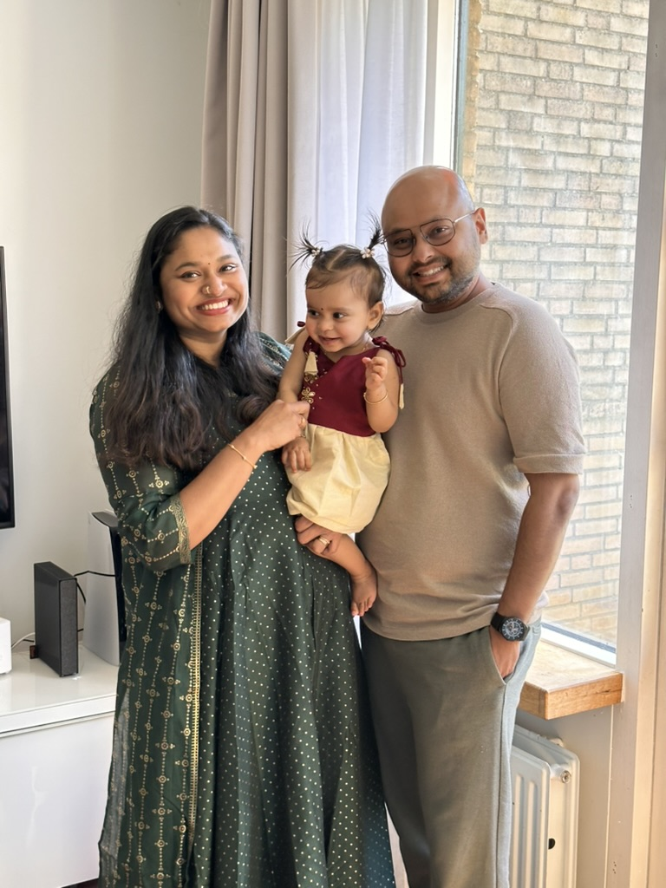

Day 1
Leaving Almere with a full heart
The morning felt calm, almost unreal, and the first kilometers slipped by in a way that made us realize this trip would be more than a drive — it would be a shared family memory.
Road Trip Journal
This was a family journey filled with snacks, short breaks, little songs, and a lot of patience — made memorable by two families traveling together with two children, a one-year-old baby, a seven-year-old girl, and a pregnant traveler.


The route
Two families traveled together from Almere and Nieuw-Vennep on a comfortable 7-day road trip through Germany and Austria, with a relaxed pace, frequent family breaks, and a special alpine day in Salzburg.
Overnight: Leonardo Hotel Nürnberg
Overnight: Leonardo Hotel Salzburg Airport
Overnight: Salzburg
Overnight: Salzburg
Overnight: Salzburg
Overnight: AC Hotel Würzburg
Overnight: Home
Gallery

That first calm morning felt full of purpose, with children bundled up and everyone ready for the road ahead.

Rain, coffee, and little pauses made the day feel slower, softer, and full of family rhythm.

A long pause in the golden light felt like a gift, especially after a day of keeping everyone comfortable and cared for.
Curves, pine trees, and the feeling that the road had become the point for all of us together.
Places to visit

Old streets, warm evenings, and a calm first stop after the long drive.

Quiet gardens, river views, and plenty of room to pause and breathe.

The mountain road felt like the grand finale of the trip.

A picture-perfect stop that made the whole route feel cinematic.
Journal entries
The morning felt calm, almost unreal, and the first kilometers slipped by in a way that made us realize this trip would be more than a drive — it would be a shared family memory.
We stopped for coffee and breaks while the sky turned gray, and somehow that made the whole day feel softer and more personal for everyone.
The lake reflected the last warm light of the day, and for a while we did nothing except sit together and let the children rest.
The road climbed into the mountains and the trip suddenly felt complete, as if the whole journey had been leading to that view for all of us.
Highlights
Leaving a little earlier than planned made the whole first day feel tender and full of possibility for the children and the adults alike.
Each new stretch brought a different kind of light, and the road never felt repetitive even with little ones in the car.
By the time we reached the mountains, the trip had become less about reaching somewhere and more about being there together as a family.
Families

Warm smiles, little adventures, and the comfort of being together on the road.

Shared laughter, gentle patience, and the kind of memories that stay with you.
Memory wall
Photo space
This space is meant for the photos that tell the story of both families traveling together — the laughter, the little hands, the sleepy baby, the curious girl, and the quiet moments that made the journey feel whole.
Travel plan
Two families: Almere + Nieuw-Vennep
06:45–07:00 — Family 2 arrives at the Almere meeting point; luggage, baby items, and snacks are loaded.
07:15 — Depart Almere together.
09:15–09:45 — Stop in Oberhausen/Duisburg for a toilet break, coffee, baby feeding/change, and a stretch.
12:15–13:15 — Stop near Frankfurt for lunch, fuel, and a longer rest.
15:30–16:00 — Optional coffee break in the Würzburg/Kitzingen area.
17:00–17:30 — Arrive in Nuremberg and check in at Leonardo Hotel Nürnberg.
18:30 — Dinner nearby.
19:30 onwards — Rest, and optionally take a short walk in the Nuremberg Old Town if everyone feels good.
08:00 — Breakfast.
09:30 — Depart Nuremberg.
11:00–11:30 — Stop in the Regensburg area for a toilet break, coffee, and a baby break.
13:00–14:00 — Stop in Irschenberg/Munich south for lunch, fuel, and a stretch break.
15:30 — Arrive in Salzburg and check in at Leonardo Hotel Salzburg Airport.
16:30–19:30 — Easy sightseeing in Mirabell Gardens, Salzburg Old Town, and along the Salzach River.
20:00 — Dinner and hotel rest.
07:30 — Breakfast.
08:15 — Depart Salzburg.
09:45–11:15 — Stop in Zell am See for the lake promenade, coffee, photos, and a relaxed break. An optional short boat ride can be added if everyone feels up to it.
11:30 — Start the Grossglockner High Alpine Road drive.
12:00 — Quick break near the Ferleiten/entrance area.
13:00–13:30 — Stop at Edelweiss-Spitze for mountain views, photos, and a short walk.
14:00–15:15 — Visit Kaiser-Franz-Josefs-Höhe for the main glacier-view highlight, toilets, and a café stop.
15:30 — Begin the return drive toward Salzburg.
16:30–17:00 — Coffee and baby break in the Bischofshofen/St. Johann area.
18:30 — Arrive back in Salzburg for dinner and rest.
Important: Take breaks often, carry snacks and water, bring warm jackets, and avoid rushing the return drive.
08:30 — Breakfast.
09:15 — Depart Salzburg.
10:15–10:45 — Coffee and toilet break in Bad Ischl.
11:15–15:30 — Enjoy Hallstatt with a lakeside promenade, market square visit, lunch, and photos. Avoid long uphill walks.
15:30 — Depart Hallstatt.
17:00 — Return to the hotel in Salzburg for a relaxed evening.
09:30 — Start slowly and keep the day light.
10:00–12:30 — Option 1: visit Hellbrunn Palace.
10:00–15:00 — Option 2: head to St. Gilgen and Wolfgangsee for lake views, a boat ride, a café stop, and easy walking.
17:30 onwards — Pack luggage and prepare for the next driving day.
08:00 — Breakfast.
09:00 — Depart Salzburg.
10:45–11:15 — Stop in Munich/Irschenberg for coffee, a toilet break, and a baby break.
13:00–14:00 — Stop in Ingolstadt for lunch, fuel, and a longer rest.
15:30–16:00 — Final break in the Nuremberg area.
17:00 — Arrive in Würzburg and check in at AC Hotel by Marriott Würzburg.
18:00–20:00 — Evening walk through the Würzburg Residence gardens and Old Main Bridge, followed by dinner.
08:30 — Breakfast.
09:30 — Depart Würzburg.
11:30–12:00 — Stop in the Kassel area for a toilet break and coffee.
14:00–15:00 — Stop in Münster/Osnabrück for lunch, fuel, and a final family regroup.
16:00–17:00 — Arrive in the Netherlands and split: Family 1 heads to Almere, while Family 2 heads to Nieuw-Vennep.